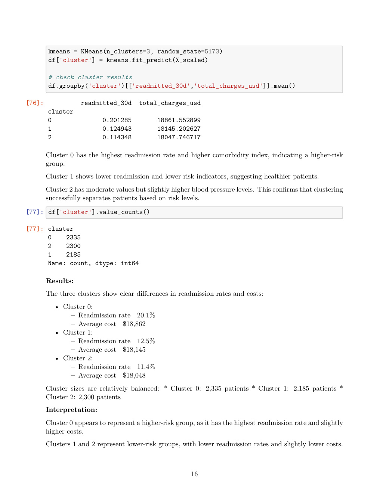

The answer
Comorbidity-based risk groups and unsupervised patient segments both identified materially different readmission patterns. The project combined inference and segmentation so the result was not dependent on a single method.
Statistical evidence
A high-risk indicator based on comorbidity was compared against the lower-risk group. The observed 7.6 percentage-point gap was statistically significant in the submitted analysis (p = 0.00117).
Uncertainty, not just a point estimate
Bootstrapping was used to estimate uncertainty around the overall readmission rate rather than treating one sample statistic as exact.
Patient segmentation
K-means produced three patient segments with different readmission and comorbidity profiles. Cluster 0 had the highest readmission rate and substantially higher average Charlson comorbidity index.

Healthcare implication
My contribution & limitations
I completed the analysis end-to-end. Before using it as a production model, I would strengthen the hypothesis-testing specification, validate the cluster choice more rigorously, and test for confounding and out-of-sample stability.